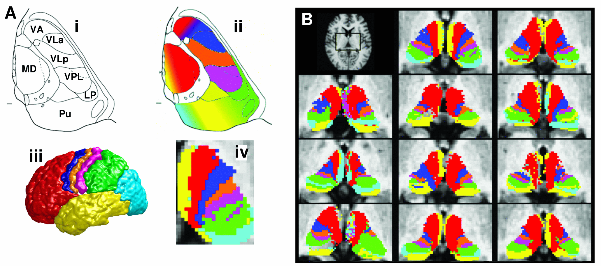

After Bedpost has been applied it is possible to run tractography analyses using ProbTrack. Probtrack can be run in several different modes:
Each mode is explained in detail below. Every mode requires the user to specify a bedpost directory. For all modes, the bedpost directory must contain the following 4D images:Results from probtrack can be binned in any available space -e.g.,
diffusion space, structural space or standard space. Note, however,
that tractography itself ALWAYS takes place in diffusion space - it is
simply the results of probtrack that are stored in the
required space. If probtrack results are to be stored in a space
other than diffusion space then you will need transformations from
this space back into the space of thediffusion data. The FDT registration tab creates the
following transformations in the xfms subdirectory of the
bedpost directory.
for running analyses in structural space:
for running analyses in standard space:
Seeds space: specification of seeds is different for each mode - see below.
If seed space is not diffusion, then check this button. If you are in Single seed voxel mode use the browse buttons to locate a reference image (e.g., subject1.bedpost/struct.hdr if seed space is structral space or subject1.bedpost/standard.hdr if seed space is standard space). Next set the transformation matrix from seed space to diffusion space (e.g., subject1.bedpost/xfms/str2diff.mat if seed space is structural space or subject1.bedpost/xfms/standard2diff.mat if seed space is standard space). Note that, in all cases, the smaller the voxel size in your seed space image, the lower will be the resulting connectivity values to these voxels (This is intuitive - the smaller a voxel is, the less chance that the true streamline will pass through it!). This highlights the problem with binning a continuous distribution into meaningless discrete bins. In order for the probability values to be truly meaningful, the dicrete bins chosen should be anatomically meaningful, as is the case in Connectivity-based seed classification.
If an exclusion mask is to be used then check the box and
use the browse button to locate the mask file. This must be a
binarised analyze file in seed space. Pathways will be terminated if
they enter the exclusion mask. For example, an exclusion mask of the
midline will terminate pathways that cross into the other
hemisphere. (Note that paths are always terminated when they reach the
brain surface as defined by nodif_brain_mask)
Use the browse button to specify an output name. This will
be a filename or a directory name depending on the mode.
 Generates a connectivity distribution from a single,
user-specified voxel
Generates a connectivity distribution from a single,
user-specified voxel
Gui Options:
Seeds space:
Enter the x,y,z co-ordinates of a single seed voxel. Use the buttons
to the right to specify whether the co-ordinates are given in voxels
or millimetres. Note if the "seed space is not diffusion" is set, and
the seed space reference image is the MNI152 average brain, then mm
coordinates will have their origin at the AC.
The output will be a single image in the space of the specified seed. All brain voxels will have a value (though many of these will be zero) representing the connectivity value between that voxel and the seed voxel (i.e., the number of samples that pass through that voxel). The example on the right shows the connectivity distribution from a single seed in the internal capsule overlaid on an FA image.
Gui Options:
Seed image:
Use the browse button to locate the seed image - this should be a
binary mask. Probabilistic tractography will be run from every voxel
with a value greater than 0 in this mask.
The output directory will contain:
probtrack.log - a text record of the command that was run.
fdt.log - a log of the setup of the FDT GUI when the analysis was run.
To recover this GUI setup, type Fdt fdt.log
The output file - will be a
single image in the space of the specified seed mask. All brain voxels
will have a value (though many of these may be zero) representing the
number of samples that pass through that voxel from the seed mask.
Connectivity distributions from multiple seed voxels are summed to
produce this output. Therefore the connectivity values will depend on
the number of voxels in the seed mask.
GUI Options:
Seed Image: Use the browse button to locate the binary seed mask.
Waypoint Masks: Use the add and remove buttons to make a
list of waypoint masks. These must be in the same space as the seed image.
The output directory will contain:
probtrack.log - a text record of the command that was run.
fdt.log - a log of the setup of the FDT GUI when the analysis
was run. To recover this GUI setup, type Fdt fdt.log
The output file - will be a single image in the space of the
specified seed mask. All brain voxels will have a value (though many
of these may be zero) representing the number of samples that pass
through that voxel starting the seed mask and which have also passed through all of
the waypoint masks. Connectivity distributions from multiple seed
voxels are summed to produce this output. Therefore the connectivity
values will depend on the number of voxels in the seed mask.
GUI Options:
Mask image 1 and Mask image 2: Use the browse buttons to locate your binary
mask of area one and area two. These must be in the same space.
The output directory will contain:
probtrack.log - a text record of the command that was run.
fdt.log - a log of the setup of the FDT GUI when the analysis
was run. To recover this GUI setup, type Fdt fdt.log
The output file - will be a single image in the space of the
specified masks. All brain voxels will have a value (though many of
these may be zero) representing the number of samples that pass
through that voxel from either of the seed masks and which also pass
through the other seedmask. Connectivity distributions from multiple
seed voxels are summed to produce this output. Therefore the
connectivity values will depend on the number of voxels in the seed
masks.
 This mode quantifies connectivity values
between a seed mask and any number of user-specified target masks. In the
example on the right, seed voxels in the thalamus are classified according to
the probabilty of connection to different cortical target masks.
This mode quantifies connectivity values
between a seed mask and any number of user-specified target masks. In the
example on the right, seed voxels in the thalamus are classified according to
the probabilty of connection to different cortical target masks.
Setting up the GUI
Seed image: use the browse button to locate your binary mask of seed voxels.
Target list: Use the add button to locate each target mask. Targets must be
binary masks in the same space as the seed mask. When all targets are loaded you
can press the save list button to save the list of targets as a text file. If
you already have a text file list of required targets (including their path)
then you can load it with the load list button.
The output directory will contatin:

probtrack.log - a text record of the command that was run.
fdt.log - a log of the setup of the FDT GUI when the analysis
was run. To recover this GUI setup, type Fdt fdt.log
A single volume for each target mask, named seeds_to_{target} where
{target} is replaced by the file name of the relevant target mask. In these
output images, the value of each voxel within
the seed mask is the number of samples seeded from that voxel reaching the relevant
target mask. The value of all voxels outside the seed mask will be zero.
There are command line utilities that can be run on the outputs of Connectivity-based seed classification:
Number of samples (default 5000): This determines the number of individual pathways (or samples) that are drawn through the probability distributions on principle fibre direction (see appendix for more details on the modelling and tractography methods). By default this is set to 5000 as we are confident that convergence is reached with this number of samples. However, reducing this number will speed up processing and can be useful for preliminary or exploratory analyses.
Curvature Threshold (default 0.2): We limit how sharply pathways can turn in order to exclude implausible pathways. This number is the cosine of the minimum allowable angle between two steps. By default this is set to 0.2 (corresponding to a minimum angle of approximately ±80 degrees). Adjusting this number can enable pathways with sharper angles to be detected.
Verbose: If this option is selected then FDT prints additional logging information to screen while it is running.
Loopcheck: By default, we terminate pathways that loop back on themselves -i.e paths that travel to a point where they have already been.
Use modified Euler streamlining: Use modified Euler integration as opposed to simple Euler for computing probabilistic streamlines. More accurate but slower.
Maximum number of steps (default 2000): By default, samples are terminated when they have travelled 2000 steps. Using a step length of 0.5mm this corresponds to a distance of 1m. These values can be adjusted if required.
Step length (default 0.5mm): This determines the length of each step. This setting may be adjusted from default e.g., depending on the voxel size being used, or if tracking is being performed on different sized brains (e.g., infants or animals).